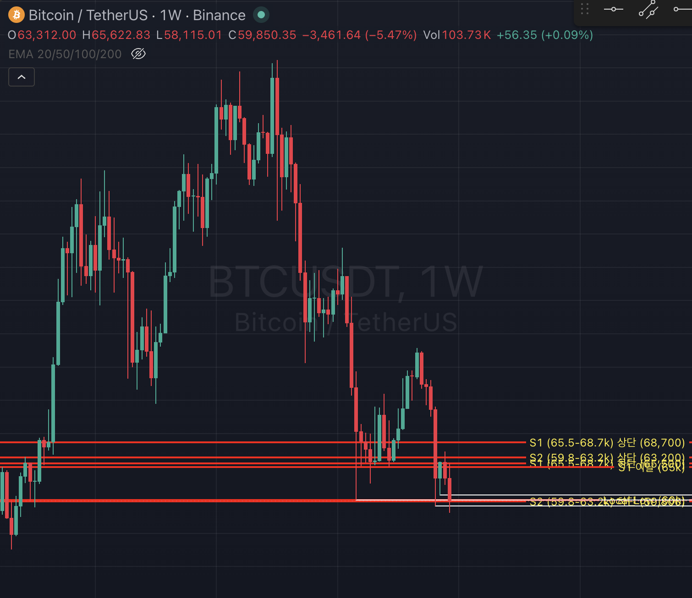

비트코인 Wyckoff Accumulation 분석
2026년 6월 26일 기준 • 주봉 관점
현재 시장 상황
Phase
Phase C (Late Stage)
Spring / Secondary Test 진행 중
지지 구간
$58,000 ~ $60,000
2월 SC 저점 재테스트
상방 확률 (주관)
55~60%
지지 유지 시 SOS 기대
Wyckoff Accumulation Schematic

Schematic 1 (Spring 포함) - 현재 BTC는 Phase C Spring/Test 구간
2026년 주요 흐름 (주봉 기준)
Selling Climax (Phase A)
$60,000 ~ $62,000 저점 (Volume 폭발)
Automatic Rally + Phase B
$76k → Pullback → $83k 근처 (TR 상단 형성)
Phase C - Spring / Test
$58k~$60k 재테스트 중 (Lower Low 연속, Volume Dry-up)
• $58k 지지 유지 = Spring 성공 가능성 ↑
• $58k 아래 강한 Breakdown = Extended Shakeout
Bullish Factors
- ✔ 2월 SC 후 Volume Dry-up 지속
- ✔ Whale + Corporate + LTH 축적
- ✔ Drawdown 52% (과거 대비 얕음)
- ✔ Miner Capitulation Floor
Bearish Risks
- ⚠ $60k 위 종가 회복 실패
- ⚠ ETF 지속 유출
- ⚠ Lower Lows 연속
- ⚠ Macro Risk-off 환경
종합 결론
현재 BTC는 Wyckoff Accumulation Phase C (Spring/Test) 구간에 있으며, $58k~$60k 지지가 버티는 한 상방 가능성 55~60%로 조금 더 우세합니다.
이번 주 주봉 마감이 핵심입니다. $58k 위에서 긴 Lower Wick을 달고 마감하면 Spring 성공 신호.
$58k 아래 강한 Body 클로즈 시 $52k~$55k 추가 하락 가능성 열림.

면책 / DISCLAIMER (반드시 읽으세요)
- ❌ 본 자료는 교육·분석·기록 목적의 개인 자료이며, 투자 권유·매매 신호·금융 자문이 아닙니다. (NOT financial advice.)
- 📊 Wyckoff의 모든 라벨(SC·AR·ST·Spring·SOS 등)은 본질적으로 사후(hindsight)에만 확정되는 해석적 가설이며, 실시간 라벨링은 빗나갈 수 있습니다.
- 🔢 가격·거래량 등 수치는 작성 시점 기준이며 이후 변동됩니다. 데이터 오류 가능성도 있습니다.
- 💸 암호화폐 투자는 원금 전액 손실이 가능합니다. 손절·리스크 관리 없는 진입은 권하지 않습니다.
- 🧾 모든 투자 판단과 그 결과에 대한 책임은 전적으로 본인(독자)에게 있으며, 작성자는 어떠한 손익에도 일체의 법적·금전적 책임을 부담하지 않습니다.
Past performance is not indicative of future results. Do your own research (DYOR).